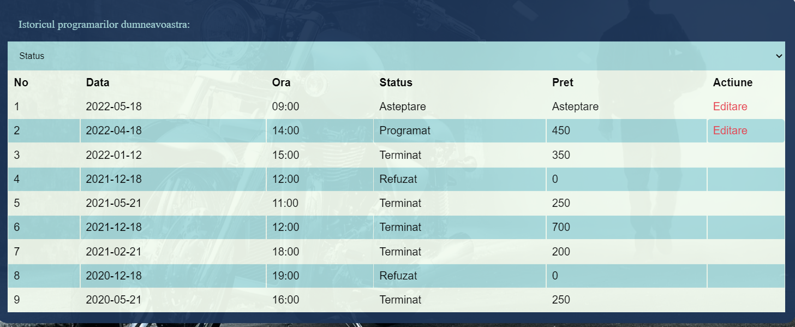

3. Cerinte de interfata externa
3.1 Interfete Utilizator
Home Page
Home Page-ul reprezinta prima pagina a aplicatiei si are rolul de a intampina fiecare utilizator si de a face legatura cu paginile de:
-
login, sign-up , programare, formular , istoric( doar pentru utilizatorii logati) in cazul clientului
-
programare, formular, adauga comanda, stoc, comenzi, export-inport date in cazul admin-ului
Pagina Calendar
Aceasta pagina poate fi accesata de orice utilizator, oferind posibilitatea de a consulta programul service-ului de motociclete pentru a putea face o programare
-
butoane de stanga-dreapta ◀ ► au rolul de a schimba ziua/saptamana/luna de start a calendarului sau de a schimba saptamana/luna calculand prima zi de luni din urmatoarele +/-7 sau +/-31 zile
-
butoanele de culoare rosie sunt ocupate de clientul curent si pot fi selectate pentru editare/vizualizare formularului respectiv
-
butoanele de culoare gri sunt ocupate de de alti clienti si nu pot fi selectate de userul curent
-
butoanele de culoare verde sunt libere si pot fi selectate pentru a incepe un nou formular la acea data si ora
-
butonul de culoare albastru este cel selectat
-
butonul Book conduce utilizatorul spre pagina cu formularul de programare
-
similar si pentru admin doar ca el are acces la toate pentru a raspunde
Pagina Formular
Aceasta pagina poate fi accesata de catre client direct din meniu, caz in care utilizatorul va avea acces si la un input ce ii va permite sa selecteze o ora/data pentru programare, sau va putea accesa pagina chiar din calendar, caz in care inputul cu data si ora programarii va fi deja setat .
-
initial formularul se afla in starea "Editare" si clientul poate incarca un mesaj text si 1 sau mai multe fisiere video/imagini
-
apoi clientul poate trimite formularul, caz in care starea acestuia se modifica in "Asteptare"
-
adminul va putea selecta acest tip de formular si va putea raspunde cu un mesaj text de acept/refuz + un tabel cu piesele de care are nevoie pentru a repara motocicleta (starea formularului ajunge in "Refuzat" sau "Accept client")
-
clientul vede in istoric ca formularul are o stare schimbata si poate accepta/refuza oferta de pret (starea formular devine "Programat" sau "Refuzat")
-
piesele se muta din stoc in stoc progrmate in momentul in care adminul raspunde clientului cu un accept
-
piesele se sterg din stoc-ul de rezervate dupa ce adminul muta formularul in starea de "Terminat"(sterg din stoc) sau "Refuzat"(reintorc in stoc)
Pagina Log In/Sign Up
Pagina Log In/Sign Up pote fi acceate din bara de navigare și conține un formular de logare în cazul în care utilizatorul are deja un cont creat, respecitv un formular de înregistrare în caz contrar
- Butonul ”Sign In”/"Sign Up" redirecționează utilizatorul către pagina Home
Pagina Istoric Programari
Aceasta pagina poate fi accesata de un utilizator logat. Aici utilizatorul poate:
- sa vada data, ora si pretul unei programari plasate
- sa vada statusul unei programari
- butonul "Editare" conduce utilizatorul la pagina cu mesajul clientului si raspunsul administratorului pentru a putea accepta/refuza oferta de pret primita, in cazul clientului, sau pentru a accepta/refuza o programare, in cazul administratorului
Pagina Adauga Comanda
Aceasta pagina este accesibila doar pentru administratorul service-ului de motociclete si ii permite sa:
- selecteze piesa/brandul/categoria si numarul de bucati pe care doreste sa le comande
- vizualizeze comenzile plasate anterior, si statusul acestora
Pagina Administrare Comenzi
Aceasta pagina permite administratorului sa :
- vizualize un tabel cu toate comenzile plasate si date despre acestea
- filtrareze comenzile in functie de anumite atribute(brand, categorie, piesa)
- marcheze comenzile aflate in asteptare ca primite, caz in care piesele sunt mutate in stoc
Pagina Administrare Stocuri
In aceasta pagina administratorul service-ului are acces la un tabel cu toate piesele din stoc si poate:
- filtra tabelul in functie de brandul/categoria/tipul piesei
- modifica numarul de piese aflate in stoc si stoc rezervate
- parcurge tabelul stanga/dreapta cu un numar X de randuri in functie de selectorul de randuri
- butonul "Reset" are rolul de a reseta toate filtrele
Pagina Import/Export date

Aceasta pagina permite administrator-ului sa:
- exporte toate/partial datele aplicatiei in format CSV/JSON/PDF
- importe toate/partial datele aplicatiei in format CSV/JSON
3.2 Interfata Software
Pentru partea de front-end folosim pagini compatibile cu HTML, CSS si JavaScript. Pentru partea de backend utilizam limbajul PHP ce este procesat prin intermediul unui server Apache din cadrul programului XAMMP. Pentru stocarea datelor aplicatiei vom folosi MySql de asemenea procesat in XAMMP.

3.3 Interfate de comunicatii
Pentru comunicarea dintre server si client folosim HTTP.
4. Caracteristicile sistemului
4.1 Arhitectura Aplicatiei:
Am optat pentru o arhitectura de tip MVC ce presupune organizarea codului in public si privat, utilizatorului fiindui-i restrictionat accesul direct la fisierele paginilor si controllere din motive de siguranta. Aplicatia sparge URL-ul in mai multe componente si verifica daca prima dintre ele este un controller existent, al doilea argument se presupune ca este o metoda a acelui controller ,deci din nou se verifica daca aceasta exista si daca este publica, iar ce urmeaza dupa eventuala metoda se presupun a fi parametrii metodei.
Delimitarea intre aceste elemente in URL se face prin semnul "/".
Toate controllerele mostenesc o clasa de baza Controller, care are 2 metode: view si model. Model returneaza un obiect de tipul dat ca paramtru iar view invoca un view cu numele paramtrului primit
4.2 Tehnologii utilizate:
HTML5 / CSS3 / JavaScript
- HTML(Hyper Text Markup Language) pentru a defini structura paginilor Web front-end.
- CSS3(Cascading Style Sheets) pentru stilizarea paginilor
- JavaScript: utilizat in special pentru filtrarea tabelelor si functionalitatea butoanelor
PHP
PHP este un limbaj de scripting de uz general, pe partea de server, potrivit pentru dezvoltarea web, care poate fi încorporat în HTML. Este folosit în principal pentru gestionarea unei baze de date, pentru a urmări sesiunile și pentru a face verificări care nu ar fi posibile fără scripting în general. În aplicația noastră este folosit adesea pentru a interoga baza de date pentru a putea imprima pe ecran anumite lucruri, cum ar fi istoricul programarilor, stocurile de piese, comenzile plasate sau pentru a adauga noi programari, comenzi, piese. De asemenea, este folosit pentru a verifica rolul utilizatorului, sau pentru a genera rapoarte (HTML/CSV/JSON).
MySQL
Pentru stocarea și gestionarea datelor am folosit sistemul de administrare a bazei de date numit MySQL. Avem 9 tabele în baza noastră de date, utilizate de PHP în interogări.
- appointments - retine informatii legate de progarmari, cum ar fi data si ora programarii
- brands - retine brand pieselor pentru reparatiile motocicletelor
- categories - pastreaza categoriile din care fac perte piesele
- files - pastreaza fisierele video/imagine introduse in forum
- forms - retine datele introduse in formular(mesajul introdus de client, raspunsul administrator-ului, lista de piese rezervate si statusul formularului
- orders - contine informatii despre comenzile plasate catre furnizori(data la care s-a facut comanda, data expedierii, cantitatea de piese comandate etc.)
- parts - contine informatii despre piesele pe care le avem sau le putem introduce in stoc(nume, pret, categorie, categoria din care face parte)
- tine - evidenta pieselor aflate in stoc
- user - tine evidenta utilizatorilor care au cont in aplicatie(nume, email, telefon, parola si tipul utilizator)
Ajax
AJAX( Asynchronous JavaScript and XML) este o tehnică de programare pentru crearea de aplicații web interactive. Intenția este să facă paginile web să devină mai rapide și deci mai acceptate, prin schimbul în fundal al unor cantități mici de date cu serverul, astfel încât să nu fie nevoie ca pagina să fie reîncărcată la fiecare acțiune a utilizatorului.Un exemplu reprezentativ pentru utilizarea acestei tehnici in proiectul nostru este atunci cand adaugam o noua comanda, caci tabelul nostru se reactualizeaza fara ca pagina sa mai fie reincarcata.
Libraria FPDF
Am utilizat libraria fpdf pentru crearea de fisiere pdf
Pentru crearea de fisiere CSV am ales sa utilizam functia din php fputcsv
5. Alte cerințe nefuncționale
5.1 Cerinte de performanta
Aplicatia are un design responsive ce permite navigare intre toate paginile aplicatiei de pe orice dispozitiv
5.2 Cerințe de siguranță
Arhitectura MVC pe care noi am ales sa o abordam presupune izolarea partii logice (business) de considerentele interfete cu utilizatorul, rezultand o aplicatie unde aspectul vizual sau/si nivelele inferioare ale regulilor de business sunt mai usor de modificat, fara a afeca alte nivele. Astfel, reprezentarea informatiilor din interactiunea cu utilizatorul sunt separate de informatiile in sine, , ceea ce ofera o mai mare siguranta aplicatiei.
Pentru stocarea şi management-ul online al codului-sursă am ales sa folosim GitHub-ul care ne-a permis o mai mare flexibilitate in indeplinirea sarcinilor
5.3 Cerinte de securitate
SQL Injection este o tehnica de injectare de cod care exploateaza o vulnerabilitate de securitate ce apare in baza de date al unei aplicatii
Pentru prevenirea impotriva atacurilor SQL Injection folosim prepared statements
5.4 Reguli de afaceri
Un raport în formatul Scholarly HTML disponibil public pe situl Web al echipei care descrie detaliile care vizează progresul proiectului. Conţinuturile multimedia aferente, dacă există, vor putea fi distribuite pe Web sub formă de prezentare ori film. Minimal, vor fi asociate tag-urile project, infoiasi, web. De asemenea, se va detalia maniera de folosire a sistemului de management al codului-sursă ales.
Ghidul de utilizare a aplicaţiei dezvoltate – disponibil ca document HTML5, recurgând la formatul Scholarly HTML.
Fiecare echipă va avea alocate maxim 20 de minute pentru susţinerea orală în sala de laborator a soluţiei Web dezvoltate. Toţi membrii echipei trebuie să fie prezenţi.
6. Alte cerinte
Un raport în formatul Scholarly HTML disponibil public pe situl Web al echipei care descrie detaliile care vizează progresul proiectului. Conţinuturile multimedia aferente, dacă există, vor putea fi distribuite pe Web sub formă de prezentare ori film. Minimal, vor fi asociate tag-urile project, infoiasi, web. De asemenea, se va detalia maniera de folosire a sistemului de management al codului-sursă ales.
Ghidul de utilizare a aplicaţiei dezvoltate – disponibil ca document HTML5, recurgând la formatul Scholarly HTML.
Fiecare echipă va avea alocate maxim 20 de minute pentru susţinerea orală în sala de laborator a soluţiei Web dezvoltate. Toţi membrii echipei trebuie să fie prezenţi.
API - an application programming interface
Apache - a free and open-source cross-platform web server software
CSS - Cascading Style Sheets - is a declarative language that controls how webpages look in the browser.
CyMaT - Cycling Maintenance Web Tool
HTTP - HyperText Transfer Protocol
JSON - JavaScript Object Notation (JSON) - is a data-interchange format.
MVC - model view controller
MySql - is an open-source relational database management system
PDF - Portable Document Format
PHP - Hypertext Preprocessor - a general-purpose scripting language geared toward web development.
TW - technology web
XAMPP - a free and open-source cross-platform web server solution stack